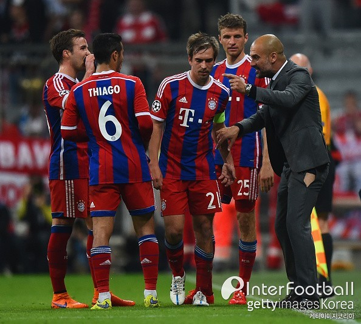
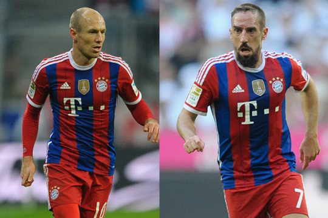

바이에른 뮌헨이 돌풍의 포르투에 잡힐 때까지만 하더라도 ‘설마’했다. 그런데 역시나 괜한 걱정이었다.
펩 과르디올라 감독이 이끄는 뮌헨은 22일 새벽 3시 45분(이하 한국시간) 독일 뮌헨 알리안츠 아레나에서 열린 포르투와의 유럽축구연맹(UEFA) 챔피언스리그(UCL) 8강 2차전에서 6-1 대승을 거뒀다. 1, 2차전 합계 7-4로 역전 드라마를 쓰며 4강에 진출했다.
대승으로 기분 좋게 4강행 티켓을 손에 넣은 뮌헨. 이와 함께 얻은 가장 큰 수확이 있었다. 바로 아르연 로번과 프랑크 리베리 없이 사는 법을 터득했다는 것.
둘은 뮌헨 공격의 주축이다. 로번은 이번 시즌 28경기에서 19골 8도움으로 경기당 1개에 가까운 포인트를 기록하고 있다. 리베리는 21경기 9골 7도움이다. 스피드와 드리블로 상대 수비를 뒤흔들고 기회가 왔을 때 방점을 찍는 데 탁월하다. 다른 공격수들과 연계 플레이에도 능하다. 존재만으로 상대에 부담이 된다.
로번, 리베리를 빼고 뮌헨을 논한다는 건 있을 수 없는 일이다. 그러나 둘 다 부상으로 최근 결장하고 있다. 분데스리가야 월등히 앞서 있는 상황이라 큰 걱정 없지만, 유럽 최고 팀을 가리는 UCL에서는 둘의 공백이 뼈아프다.

특히 지난 15일 포르투와의 8강 1차전 원정에서 공백을 절실히 느꼈다. 당시 뮌헨은 1-3으로 패했다. 안 풀렸고, 꼬였다. 만약, 로번과 리베리가 있었다면 양상이나 결과 모두 달라졌을지 모른다.
부담을 안고 임한 2차전. 1차전과 멤버 구성에 큰 변화 없었다. 괴체-레반도프스키-뮐러가 최전방에 나섰고, 2선도 알칸타라-알론스-람이 배치 됐다.
독기를 잔뜩 품은 선수들, 과르디올라 감독은 무조건 ‘공격 앞으로’였다. 무너진 자존심을 지키기 위해 일주일 간 이를 악물고 준비했다. 초반부터 경기를 압도, 이를 증명하는데 40분이면 충분했다. 알칸타라의 헤딩 선제골을 시작으로 보아텡, 레반도프스키, 뮐러, 다시 레반도프스키가 연속골을 터트리며 전반을 5-0으로 마쳤다. 후반 들어서도 맹공을 퍼부었고, 한 골 실점 했으나 막판 알론소의 환상적인 프리킥골로 완벽한 승리를 따냈다.
골 장면이나 만들어지는 과정을 보면 대부분 약속된 플레이였다. 크로스에 이은 헤딩, 패스에 이은 마무리, 과감한 중거리 슈팅, 프리킥까지. 축구에서 나올만한 아름다운 장면과 골이 모두 나왔다.
스타는 있되 이 스타를 철저히 팀에 녹아들 게 하고, 스타 없이도 팀 본연의 색을 유지하며 조직적으로 상대에 맞서는 방법. 과르디올라 감독의 철학이 드러난 판이었다. 로번, 리베리 없이도 나머지 구성원들의 장점을 극대화 하며 위기를 정면으로 돌파했다.
현재 뮌헨은 로번, 리베리뿐 아니라 공격과 미드필드에 슈바인 슈타이커, 하비 마르티네스 등이 부상으로 빠져 있다. 이들이 가세하면 지금보다 전력이 더 탄탄해질 수밖에 없다. 트레블에 도전하는 뮌헨의 발걸음이 더욱 가벼워질 것으로 보인다.